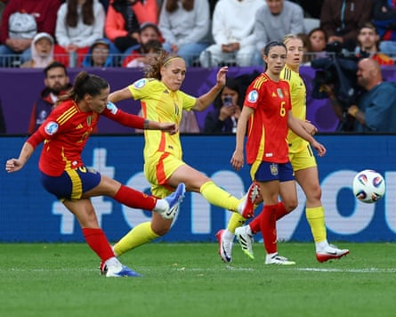

Spain continued their rich goalscoring form and closed on the knockout stages of Women’s Euro 2025 as they put six goals past Belgium on a rain-soaked evening in Thun.
The world champions were twice pegged back by Belgian equalisers, but Elísabet Gunnarsdóttir’s side were eventually overpowered and Belgium will now be eliminated unless Portugal beat Italy in Monday’s late kick-off.
Spain, who had scored five times in their opening victory against Portugal last Thursday, went one better in their second outing and will now be guaranteed a quarter-final spot unless Portugal beat the Italians and both of those sides also overturn huge goal-difference deficits with victories on Friday.
This Group B match was being contested in the pretty town of Thun, where surfers love to ride the Aare river, in the centre of the old town, including earlier on Monday afternoon, as the heavy downpours of rain only strengthened the river’s force. Each time the surfers fell and were swept downstream, they would swim back upstream, to try their luck again, adjacent to the tournament fan zone.
The scene proved rather reminiscent of Belgium trying to resist wave after wave of Spanish attacks in the second half, but it felt as though every time Belgium clawed themselves back into the match, a fresh torrent of Spanish brilliance swept them away again.
Alexia Putellas began the relentless scoring when she rounded off a neat team move, after superb play from Vicky López, to clinically tuck the ball home. Justine Vanhaevermaet briefly stunned the pre-tournament favourites as she headed in from a corner, but Spain were soon back in front when Irene Paredes headed in to make it 2-1, towards the end of a first half which had also seen Olga Carmona drive a powerful strike narrowly wide.
Claudia Pina scores Spain’s stunning fifth goal.Photograph: Piroschka Van De Wouw/Reuters
The crowd were momentarily sensing a monumental shock might be on the cards, when Hannah Eurlings sprinted in behind Spain’s defence and slotted in, but almost immediately after the restart, Esther González met Putellas’s outstanding pass to restore Spain’s lead at 3-2.
By this point, the Ballon d’Or winner Aitana Bonmatí, still returning carefully to full fitness after suffering from viral meningitis before the tournament, had been brought on as a half-time substitute and she was showing her usual creativity and style in midfield. Spain were mounting pressure and eventually, shortly after the hour mark, Mariona Caldentey tucked in from close range, before a marvellous strike from Claudia Pina in the 81st minute, curled into the far corner from distance, made it 5-2 with a goal that will undoubtedly be included in the goal-of-the-tournament shortlist.
Putellas, who was deservedly named as the player of the match, showed her class with a fine finish to add her second of the game and Spain’s sixth, and Montse Tomé’s team continue to look like they will justify their status as favourites.